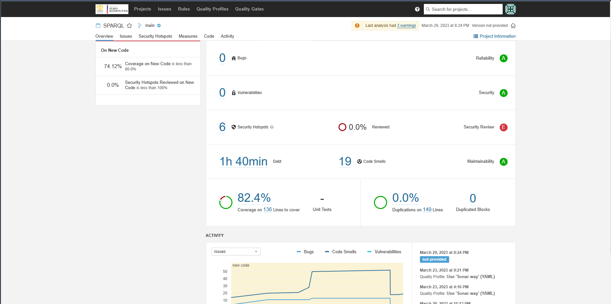

On this section i will focus on what we as a SCRUM team did on our project spesifically about the Quality Assurance
So, this section actually related to the other section which is the Test Driven Development section. So, maybe if you have not read that part you can also read that part to make it clear about what im going to share here.

As we can see on the picture above, we connect our project to one of the tools that can helps us manage our code quality. In this case, we use sonarqube. As i mentioned before this section is actually related to the TDD section. Why? becase on this quality assurance tools such as sonarqube it tells us which code that has not been covered by a test or a unit test. The main reason is to make maintain the consistency and also minimizing the chance of bugs in our project. So, basically if all the code in the project are covered by a test it will decreasing the chance of unexpected bugs. Other than that, it can also tells us wether our code can be refactored so we can read the code easier.